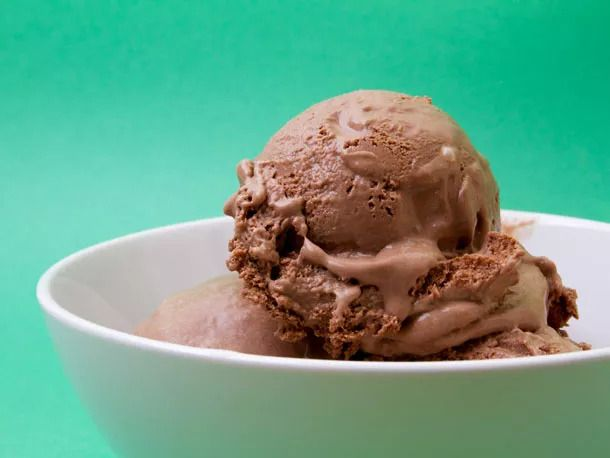

Chocolate Peanut Butter Ice Cream

Description
Rich dark chocolate and creamy peanut butter
Ingredients
Yield: 1 qt
- Cocoa powder – 3/8 cup (30 g)
- Sugar – 3/4 cup (5.3 oz)
- Corn syrup – 3/8 cup (4.3 oz)
- Heavy cream – 1 1/2 cups (12 oz)
- Whole milk – 1 1/2 cups (12 oz)
- Peanut butter, smooth ‐ 3/4 cup (6.8 oz)
- Ice
- Cold water
Directions
- In a small saucepan, combine cocoa powder, sugar, and corn syrup, stirring with a whisk.
- Add cream and milk to the saucepan, stirring with a whisk.
- Heat the mixture over medium heat, whisking frequently, until fully combined.
- Add peanut butter to the mixture and whisk until fully combined. Heat mixture if necessary.
- Strain the mixture into an airtight container.
- In a large bowl, combine ice and cold water. Place the ice cream base in the ice-water bath. Chill the bowl (with the ice cream base and ice-water bath) in the refrigerator for at least 8 hours.
- Churn the ice cream in an ice cream maker according to the machine's instructions.
- Transfer the ice cream into an airtight container. Chill in the freezer for at least 4 hours.
Back to recipes